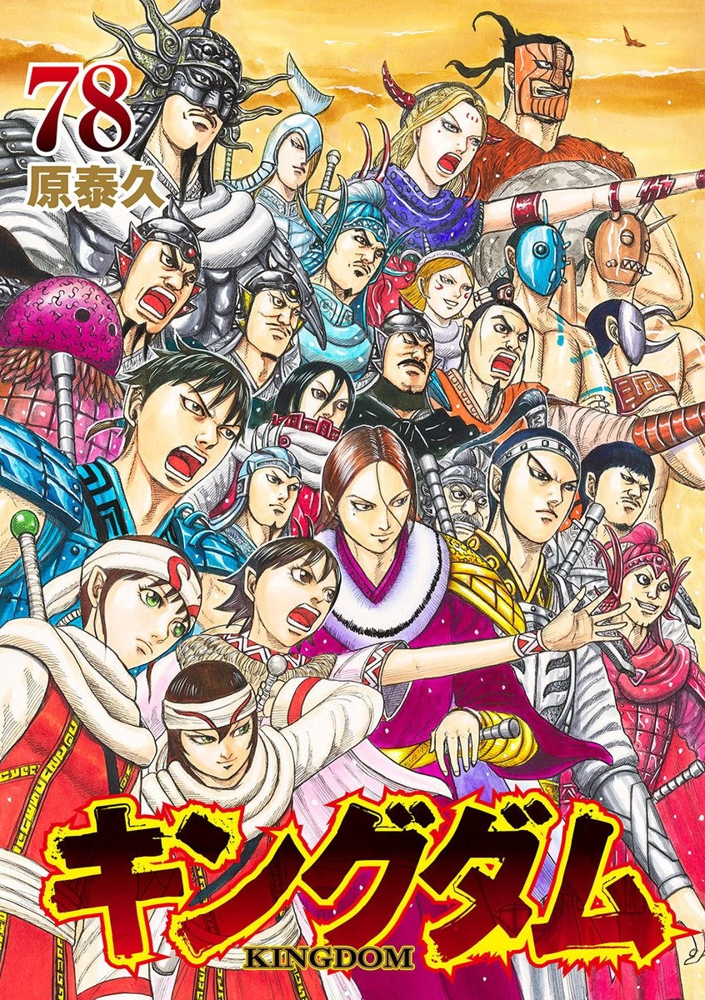
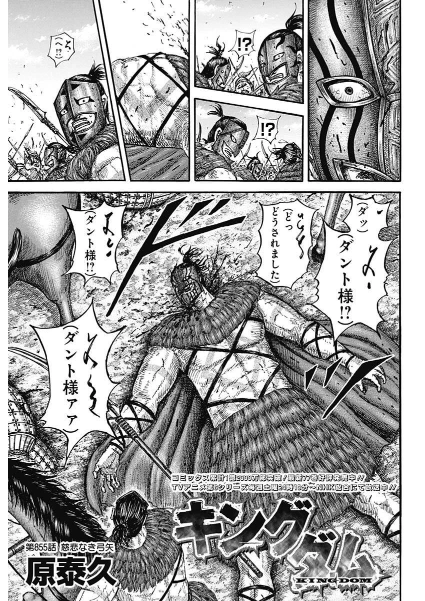

Kingdom
by Yasuhisa Hara
Synopsis
Set during China's Warring States period, Kingdom follows Xin, a war orphan who dreams of becoming the greatest general under heaven. Alongside Ying Zheng, the young king of Qin who seeks to unite China, Xin rises through the ranks of the military, facing fierce enemies, dangerous battles, and political conflicts that will shape the future of the nation.
Chapter 1

In a time when rival kingdoms fight for control of China, two orphaned boys, Xin and Piao, train relentlessly with the dream of becoming legendary generals. Their lives take a dramatic turn when Piao is summoned to serve in the royal palace, leaving Xin behind with unanswered questions about their future.
After a tragic encounter changes everything, Xin becomes entangled in the struggle surrounding Ying Zheng, the young king of Qin. What begins as a personal journey soon grows into a much greater ambition, setting Xin on a path filled with warfare, sacrifice, and the dream of changing history.
— End of chapter —